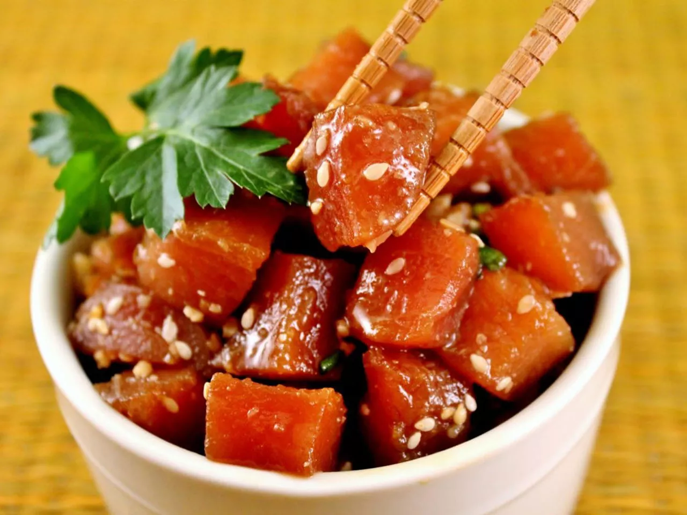
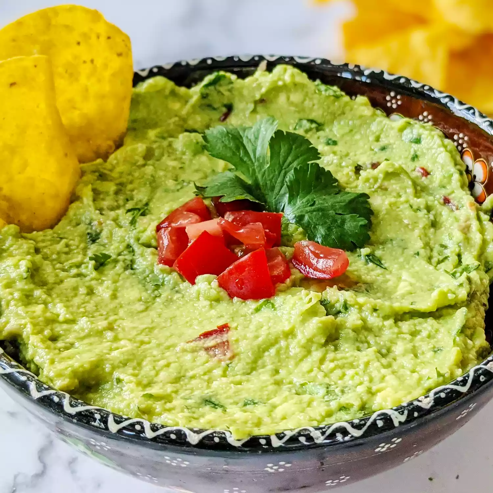

Ahi Poke 
This easy poke recipe is a refreshing Hawaiian salad of fresh ahi tuna steak cubes tossed with soy sauce, sesame oil, and green onions for a dish full of umami flavor. I like to add chopped macadamia nuts even though they are not authentic — they add a delicious crunch! This makes 4 main course servings or 8 appetizer servings.
These Chinese egg rolls come from my mom who is the best cook ever — and I am a picky eater. If I like this, then you will. This is very authentic because my family is Chinese and I am too. This recipe is at least 300 years old in the Ling family.
Guacamole 
This guacamole recipe gets a tasty kick from cayenne and cilantro. You can serve it smooth or chunky depending on your tastes.